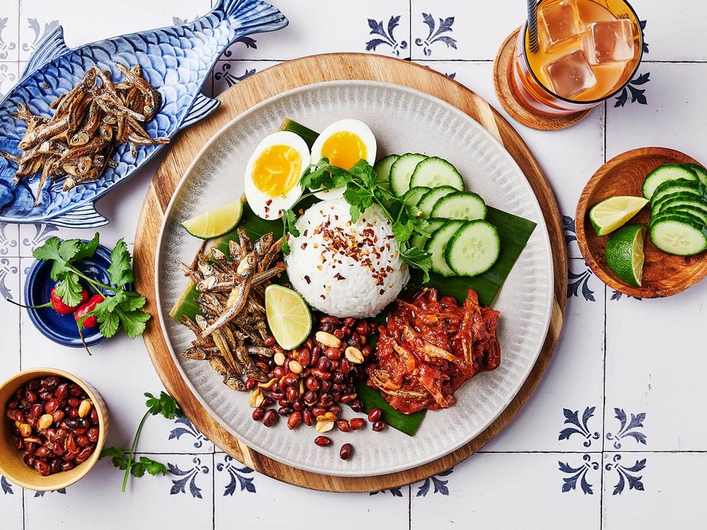
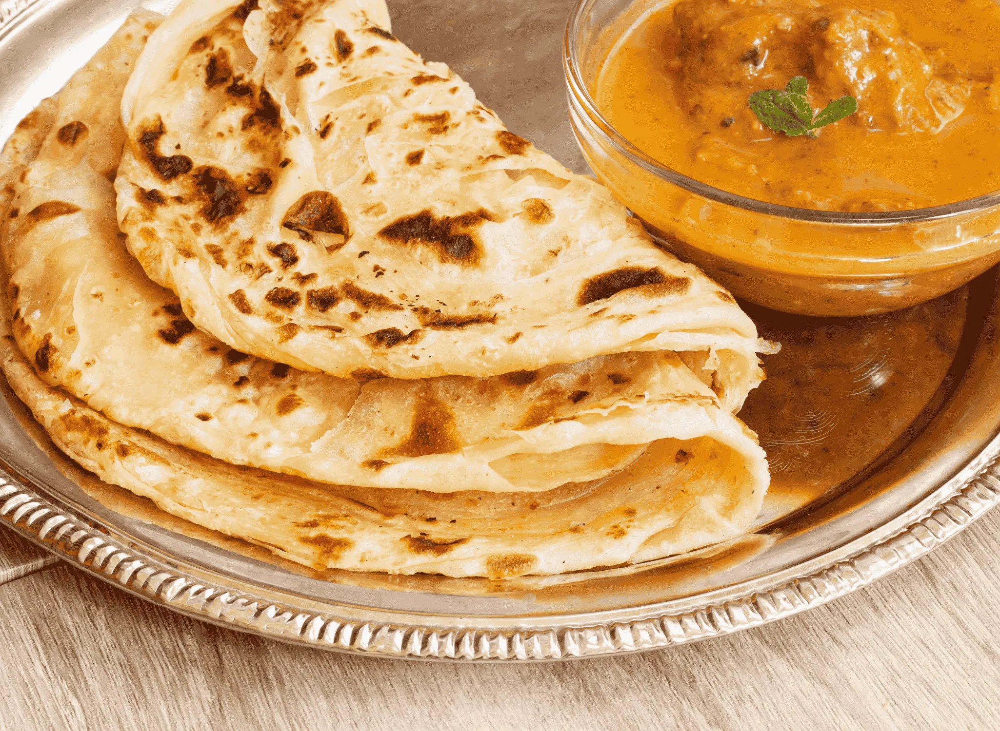
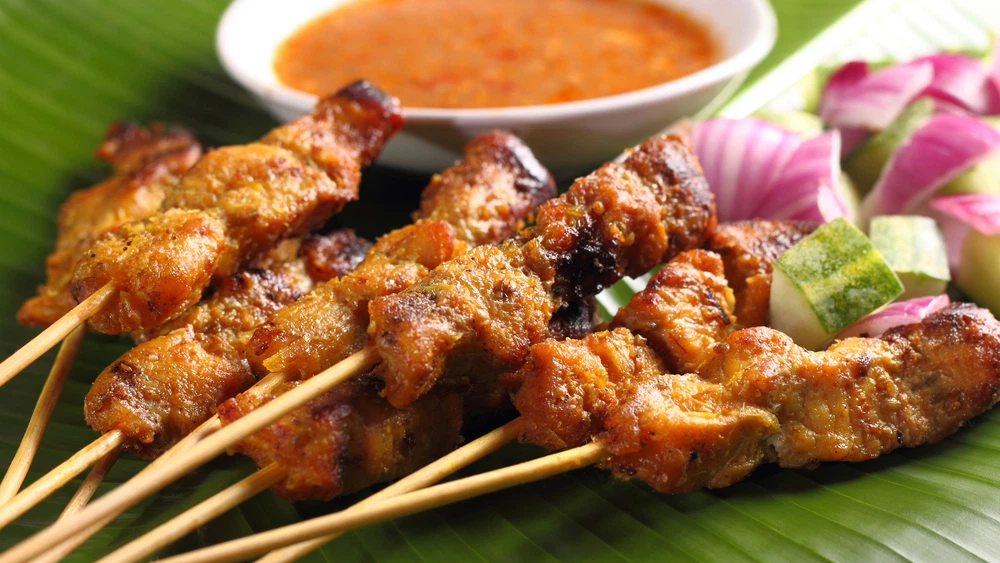

Food & Cuisine

Nasi Lemak
Malaysia’s national dish with coconut rice and spicy sambal.

Street Food
Explore local flavors at Jalan Alor and night markets.

Local Desserts
Try sweet treats like cendol, kuih, and ais kacang.

Roti Canai
Flaky flatbread served with curry, a breakfast favorite.

Satay
Grilled meat skewers served with peanut sauce.